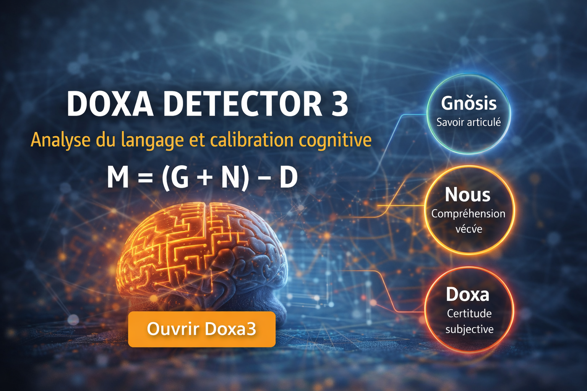

G — Gnōsis
Savoir articulé, transmissible et formulable à l’intérieur d’un cadre donné.

Analyse cognitive du langage, du discours et de la crédibilité.
M = (G + N) − D
Une interface conçue pour explorer la structure cognitive d’un texte, repérer les tensions entre savoir, compréhension et certitude, et proposer une lecture plus fine du discours.
Savoir articulé, transmissible et formulable à l’intérieur d’un cadre donné.
Compréhension intégrée, vécue et expérientielle, qui dépasse la simple possession d’informations.
Certitude stabilisée, envisagée selon son degré de rigidité ou de révisabilité.